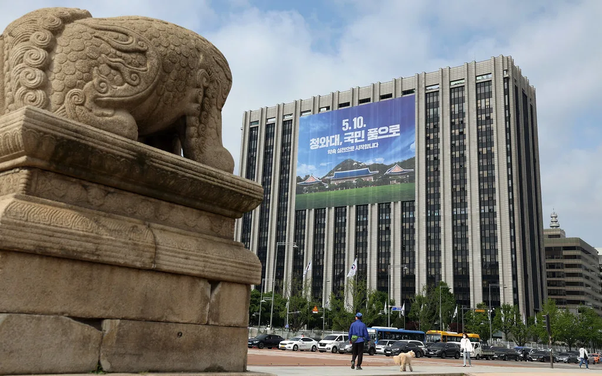
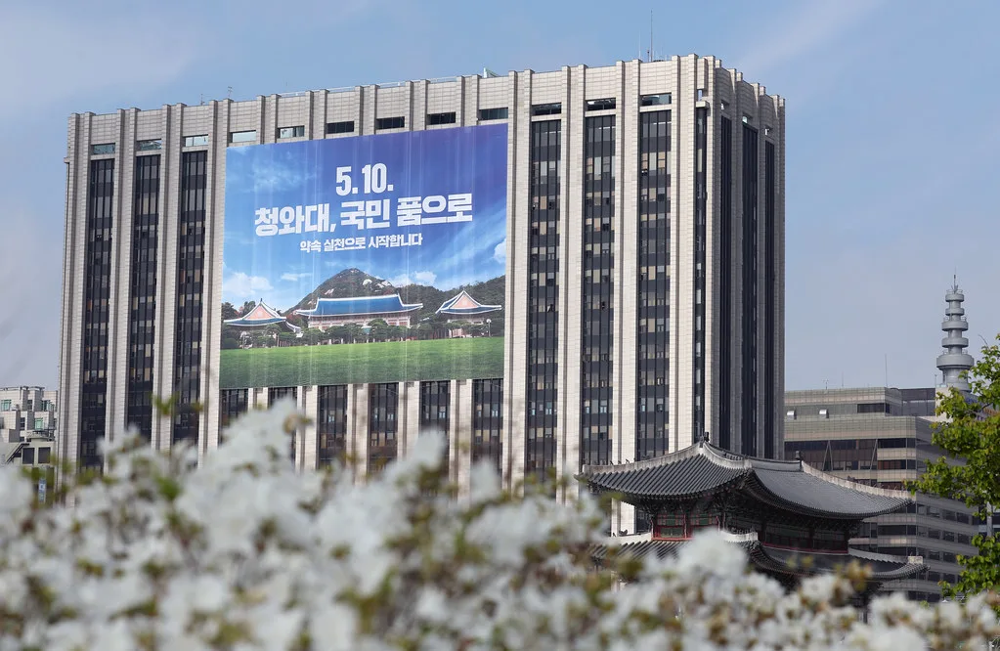

이재명 대통령, 6개 부처 중폭 개각…경제부총리 이형일·법무 김승원·국방 강신철
이재명 대통령이 30일 재정경제부·국토교통부·중소벤처기업부·국방부·법무부·성평등가족부 등 6개 부처 장관 후보자를 한꺼번에 지명하는 중폭 개각을 단행했다. 강훈식 대통령 비서실장은 이날 청와대 춘추관에서 브리핑을 열고 인선 결과를 발표했다. 취임 2년 차에 접어든 대통령이 경제 컨트롤타워와 부동산 정책 주무 부처, 안보·사법 라인을 동시에 교체하며 국정 기조를 다잡겠다는 뜻을 분명히 한 것으로 풀이된다.
경제부총리 겸 재정경제부 장관 후보자에는 이형일 현 재정경제부 1차관이 발탁됐다. 국토교통부 장관 후보자에는 홍지선 현 차관, 중소벤처기업부 장관 후보자에는 이소영 더불어민주당 의원이 지명됐다. 국방부 장관 후보자로는 강신철 전 한미연합사령부 부사령관, 법무부 장관 후보자에는 국회 법제사법위원회 여당 간사를 지낸 김승원 민주당 의원, 성평등가족부 장관 후보자에는 용혜인 기본소득당 대표가 각각 낙점됐다.

경제팀을 이끌 이형일 후보자는 1971년 대구에서 태어나 서울대 경제학과를 졸업하고 행정고시 36회로 공직에 입문한 정통 관료다. 재정경제부에서 경제분석과장, 종합정책과장, 경제정책국장, 차관보 등 거시경제 정책의 핵심 보직을 두루 거쳤고 통계청장도 지냈다. 세계은행 선임 이코노미스트로 일한 경력이 있어 국제 감각을 갖췄다는 평가를 받는다. 현 정부 출범 후에는 재정경제부 1차관으로서 일자리와 물가, 성장률 등 주요 지표 관리를 맡아 왔으며, 정부가 추진하는 중장기 성장전략의 밑그림을 그린 인물로 꼽힌다.
이번 개각은 순차 교체가 아닌 일괄 발표 방식을 택했다는 점에서 눈길을 끈다. 대통령 국정 지지도가 취임 이후 최저 수준까지 내려온 상황에서, 여러 부처를 한 번에 손보는 방식으로 쇄신 의지를 부각하려 했다는 해석이 나온다. 특히 물가와 청년 취업난, 부동산 세제개편 등 국회 통과가 쉽지 않은 현안이 쌓여 있어 경제팀 재정비가 시급하다는 판단이 작용한 것으로 보인다.
인선 면면에는 통합 메시지도 담겼다. 대통령은 조국혁신당 소속 이해민 의원을 청와대 인공지능미래기획수석에 임명하고, 김경수 전 경남지사를 정무특별보좌관으로 위촉했다. 앞서 자리에서 물러났던 하정우 전 AI미래기획수석은 국가인공지능전략위원회 부위원장으로 복귀시켰다. 범여권과 옛 친문 인사를 두루 기용하며 국정 지지 기반을 넓히려는 포석으로 읽힌다.

경제부총리 교체로 구윤철 현 부총리는 취임 1년여 만에 물러나게 됐다. 구 부총리는 최근 주요 20개국(G20) 재무장관·중앙은행 총재 회의 참석을 위해 인천공항까지 갔다가 출국 직전 일정을 취소하면서 교체설에 무게가 실렸다. 안보 라인에서는 군 요직을 두루 거친 4성 장군 출신 강신철 후보자가 지명되면서, 한미 연합훈련 조정과 방위비 협상 등 현안 대응에 관심이 모인다.
후보자 6명 가운데 현역 국회의원이 3명 포함돼 있어 가을 인사청문 정국은 치열할 전망이다. 야당은 도덕성과 정책 역량을 두루 검증하겠다고 예고했고, 여야는 정기국회 예산·법안 심사 일정과 맞물려 곳곳에서 충돌할 것으로 보인다. 여성가족부에서 이름을 바꾼 성평등가족부의 경우 1990년생인 용혜인 후보자가 임명되면 역대 최연소 장관 기록을 새로 쓰게 된다. 국회가 청문보고서를 채택하지 않더라도 대통령이 임명을 강행할 수 있는 만큼, 임명 시점을 둘러싼 신경전도 예상된다. 대통령실은 이번 개각과 연계한 후속 차관 인사도 조만간 마무리할 방침이다.